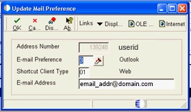
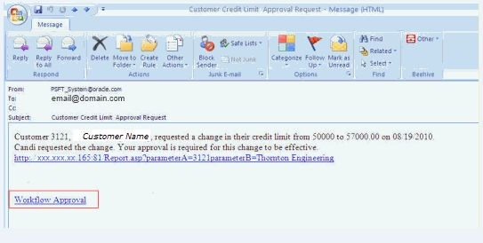
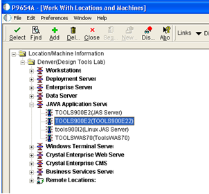
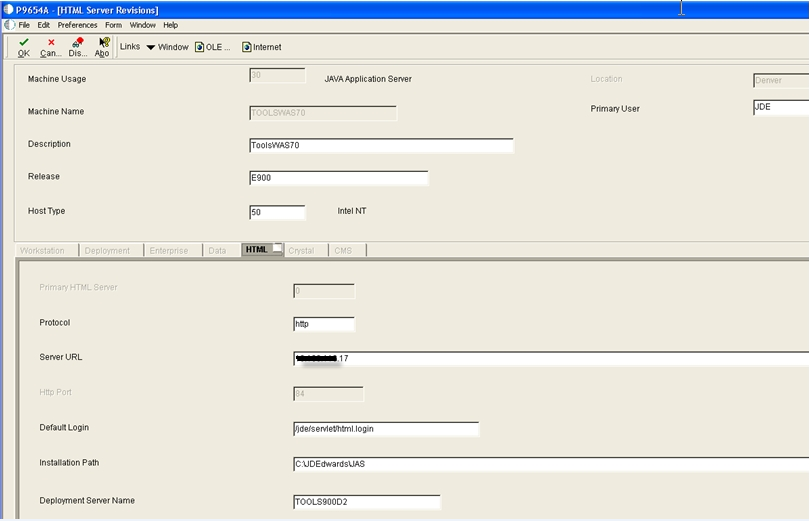
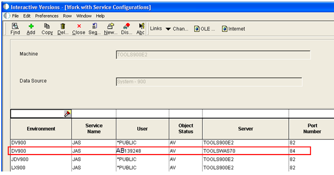

External email can include approval URL (parameterized URL), job completion messages, etc., and requires routing through an SMTP server. This document details the steps and requirements to setup External Mail (external email) for EnterpriseOne 8.9 and later releases of the software. Once this is set up, messages sent by Workflow processes, the Send Message or send messaged extended system functions, and UBE completion (report completion or RDA completion) messages will be sent to external mail.
Currently SMTP user authentication (aka Secure SMTP or SSL SMTP) is not supported in E1. However there is an Enhancement bug requesting the functionality. See Bug:10849471 : SMTP, USER AUTHENTICATION for additional details and also see SMTP Error 553 Unable to Send Mail to Internet E-mail Address. Please also try community or engage Oracle field consultant.
Scope
This document is intended for the developer, system administrator, or user who will be setting up external mail.
Details
Overview
The following are the steps to setup External Mail for EnterpriseOne 8.9 and later releases of the software and are numbered by the headings. Skipping a section, especially the final step, can result in emails or URL links not working properly.
1. Update the JDE.ini file on the Workstation AND the Enterprise Server
Open jde.ini located in the Windows or WinNT directory
Search for key Rule1 in [JDEMAIL] section
Set the value to Rule1=90|OPT|MAILSERVER=<your SMTP server name>. In Rule1 you can use the IP address for the name of the mail server for the Fat Client and the NT Application Server without any problems. But for the AS/400, IP address will not work. So use the fully qualified mail server name in the AS/400 jde.ini file and also create a Host File entry.
Setup for Rule2, Rule3 and Rule4 (normally leave as it is defined) or change the domain name from "jdedwards.com" to whatever is appropriate in the customer site
Save the JDE.ini
Restart EnterpriseOne
The Web server is using the jde.ini on the Enterprise server for sending e-mail. Nothing needs to be done on the JAS server.
2. Setup the User in Address Book (Who's Who) and Define the Mail Preference
Setup the user in the Address Book application, P01012.
Define the Mail Preference for the user who is to receive the UBE completion and Workflow messages.
Select Employee Queue Manager from G02.
Find the users Address Book number.
Select Email Preference from the Row exit. Note: the following print screens are from a fat client.
8.10 Mail Preference - Enter the E-mail Preference = 3, Shortcut Client Type = 01 and valid E-mail Address for the user. There are many available values for E-mail Preference. It does not matter which one is selected, but the value cannot be blank when using external mail.

Mail Preference as of 8.11 SP1 and Later - Enter the Electronic Address Type = E, Email Address, and Messaging Indicator =1. Please see screen shot below from fat client. Second print screen is from web client:-
As of EnterpriseOne release 8.11 SP 1, messages can be sent BOTH to external mail and Work Center. In the preferences for the user, add an additional record with Address Type = W and Messaging Indicator = 1. ie Add one more line in the grid. Please see the screen shot below. When accessing Preferences from the web use Electronic Address Type = Internal Address to send messages to Work Center.
Caution: If workflow succeeded in sending message to workcenter but failed to email, the workflow instance will be in error status and user will get error message "Message is already acted upon" when they open the message in workcenter. Enhancement Bug 27138186 - ENHANCEMENT: P98805 & P98806 SHOULD SAY THERE IS AN ERROR INSTEAD OF MSG ACTED was entered for this.
3. User Profile
Each User ID must have a valid address book number associated with it in User Profiles, P0092.
Currently UBE completion messages and Workflow approval messages either are sent to Work Center or External Mail or both (as of 811 SP1). They cannot be mixed and selectively sent to either of the two. You can disable the UBE completion messages. See How to Disable the UBE Job Completion Messages for additional details.
E1 can connect to any mail server which supports standard SMTP protocol. Use the following steps to verify the setup of the SMTP server.
Ping the SMTP server. It should return with success.
To test the connection to the SMTP server, issue the following from the client PC and the enterprise server: telnet <smtpHost> 25. For example: telnet mail.domain.com 25. It should return 220 <SMTP server name> SMTP. Note: telnet port 25 to send email is the same for every smtp server.
If the line comes back beginning with 220, this verifies the integrity of the SMTP connection.
Follow this link to test sending e-mail through the SMTP server: http://support.microsoft.com/kb/153119/ JDE is using the same method to send email, if email is not sent, please login to the smtp server to check if there is error. Your smtp server should have log to show what was happening.
The value used for smtpHost in the above telnet test should be the same value for the mail server that was entered in the jde.ini for the Rule 1 mail server. Make sure e-mail through port 25 is not blocked by any third party security software. Make sure smtp server is configured according to standard and do not do unnecessary validation.
Starting with release 9.1.2, the SMTP port can be configurable. JDE.ini (Enterprise Server) has a new setting in [JDEMAIL] to define the SMTP port used to send email messages: SMTPPort=25 The default value of the ini setting is 25 but you can change the value to match your SMTP configuration. Refer to BUG 12867793 JDE TO HANDLE OTHER SMTP PORTS BESIDES 25 for additional information. NOTE:- We do not have any specific port number recommendation. You may use any port number that is not in use and that does note create a port conflict .
Secure SMTP
Currently SMTP user authentication (aka Secure SMTP or SSL SMTP that requires login and password) is not supported in E1. However there is an Enhancement bug requesting the functionality. See Bug 10849471 SMTP, USER AUTHENTICATION for additional details and also see SMTP Error 553 Unable to Send Mail to Internet E-mail Address.
After completing the steps above, test to verify external mail is setup correctly.
From a Fat Windows client, run a report such as R0006P locally. The UBE completion message should be sent to your external mail and then you know the local jde.ini is setup correctly and communicating with the SMTP server.
If the UBE completion message is not received, then review the jde.log for SMTP errors and also verify the jde.ini has the correct mail server in Rule1.
Then run the same report on the enterprise server. The UBE completion message should be sent to your external mail and then you know the enterprise server jde.ini is setup correctly and communicating with the SMTP server.
If the UBE completion message is not received, then review the jde.log for SMTP errors and also verify the jde.ini on the enterprise server has the correct mail server in Rule1.
You can also review the information in the jdedebug.log. It will show whether the e-mail was forward to smtp server successfully or if an error was encountered. If smtp server receive the email but end user still does not, get smtp admin to check smtp log.
Example jdedebug.log when smtp receive the email without errors:
Mar 18 16:16:27 ** 1548/1300 Entering JDE_SendEMailSMTP myEmailAddress: <JDE_System> emailSubject: <OneWorld Job R0010P , COT0001 Completed> numAttachments: 0 recipients: <firstname.lastname@somecompany.com> cc: <(null)> bcc: <(null)> Mar 18 16:16:27 ** 1548/1300 Entering JDB_InitUser with commit mode 0. Mar 18 16:16:27 ** 1548/1300 Entering JDB_BeginTransaction Mar 18 16:16:27 ** 1548/1300 Entering JDB_OpenTable( Table = F90005) Mar 18 16:16:27 ** 1548/1300 Entering JDB_SelectAll Mar 18 16:16:27 ** 1548/1300 ORACLE DBInitReq conn=03F46130 requ=06C7FE88 cot-jde (prod) new Mar 18 16:16:27 ** 1548/1300 SELECT * FROM PRODDTA.F90005 Mar 18 16:16:27 ** 1548/1300 Entering JDB_Fetch Mar 18 16:16:27 ** 1548/1300 ORACLE DBFetch: Invoke OCI Fetch fetchNumRows = 100 Mar 18 16:16:27 ** 1548/1300 Entering JDB_CloseTable(Table = F90005) Mar 18 16:16:27 ** 1548/1300 Entering JDB_ClearSequencing Mar 18 16:16:27 ** 1548/1300 Entering JDB_ClearSelection Mar 18 16:16:27 ** 1548/1300 ORACLE DBFreeReq conn=03F46130 requ=06C7FE88 CLOSE Mar 18 16:16:27 ** 1548/1300 Entering JDB_ClearBuffers Mar 18 16:16:27 ** 1548/1300 Exiting JDB_ClearBuffers with success. Mar 18 16:16:27 ** 1548/1300 Exiting JDB_CloseTable(Table = F90005) with Success Mar 18 16:16:27 ** 1548/1300 Entering JDB_FreeUser Mar 18 16:16:27 ** 1548/1300 Leaving JDE_SendEMailSMTP with return code value: <0>
3. Use "Send Shortcut" feature from the Tools menu of any application and send a message to an User/Role or Distribution list.
Note: In some situations if the body of the email is blank, the message will not be sent. There is a setting "SaveBlankTextMO = true" in the OWweb section in the jas.ini which will enable blank media to be stored in the F00165 table. If this is not true then blank media objects will not be saved and the email will not be sent. Making this ini setting equal to true will send e-mails even with a blank body in the Send Shortcut form.
Most of the workflow processes send a shortcut link to an EnterpriseOne application. Normally, the shortcut contains a link to an approval form, but can be any type of form or application. The way the initial application, workflow process or report sends the link to the user is via the Send Message system function or Send Message Extended system function. Those system functions contain an "Active parameter" which provides a shortcut to an E1 application, approval form, etc.
When external mail is used, the user will receive an e-mail containing a shortcut link for an E1 application. The shortcut URL is constructed using the JAS server settings. When the user clicks on the shortcut link in external mail, the URL will contain the protocol, JAS server URL, and http port.

In order for the shortcut URL to be generated correctly and sign the user into the correct environment, JAS server information needs to be setup. The following steps discuss the necessary JAS server setup.
Setup all JAS servers in P9654A. Go to P9654A, select JAVA Application Server node and press Add.

2. One server must be designated as the primary JAS server by entering a "1"in Primary HTML Server. All other servers will have a "0" in Primary HTML server. The information on this form is used to construct the URL for the shortcut link in the external e-mail. The protocol, server URL, and port number are used to create the URL
Primary Server
Secondary Server

NOTE: the Server URL field needs to contain the fully qualified server name such as servername.domain.com or the ip address such as x.x.x.17.
3. Setup JAS server overrides in P986110 version ZJDE0003.
There may be certain users or certain environments where you want a different JAS server for the workflow shortcut. For example: the primary JAS server is the production JAS server, but you want the development users to use a different server when working in DV. So you would setup the overrides to the primary JAS server in P986110.
Another desirable scenario would be to have multiple JAS servers for same environment and same user. However, in JAS server overrides (P986110 version ZJDE0003), the application is not allowing to activate such configuration as described above. The workaround is to create a Role acting like *PUBLIC, add this Role to the desired users and create the mappings in P986110|ZJDE0003 using this Role instead of *PUBLIC.
The available values for Service Name are JAS, SVC_DEF, and RTE and are stored in UDC table H95/VT. From a workflow perspective, JAS and SVC_DEF are the only relevant values in H95/VT.
RTE is reserved for the Real Time Events transaction server location setting. When doing a JAS lookup in P986110, the system first looks for an Object Name OMOBNM = "JAS" in F986101. If this entry is not found, then the system looks for OMOBNM= "SVC_DEF" as an alternative. SVC_DEF is just the default service that system defaults to when it does not find a particular one (i.e. JAS in case of workflow shortcut).
The value that should be used the jas shortcut url configuration is JAS.
Ports within the Service Configuration Revisions (P96110) have to match a JAS Server definition within JAS Server Definition (P9654A), on name as well as port.
For 8.10, if you cannot find version 3, install ESU PG3492 to get the new version named "Service Configuration"
4. In a load balancer environment in order for the shortcut link to contain the load balancer url and not the other Jas servers as defined in P9654A perform the following:
Add a new jas server record in P9654A for the load balancing using the load balancer url.
Many times load balancer do not have a port number associated with them. Internet standard states that if there is no port its assumed port 80 is used. If that's the case use port 90 in the definition of the load balancer server in P9654A.
If that doesn't work then configure the actual load balancer to user a port number and then use that port number in the definition of P9654A.
Then setup an override in P986110 if necessary.
These mappings need to be defined for both System and Server Map data sources including "J"environments
If you do not have the jas server with matching port number setup in P9654A you will receive error "Invalid Logical Data Source" when setting up overrides in P986110.
In order for the JAS server overrides to be effective in case of ROLE mappings, the user must sign in specifically with the role for which the mappings are made. Signing in with *ALL will ignore the mappings done at Role level. See Comprehensive Solution On OCM and Its Role in JD Edwards EnterpriseOne. It states: OCM (P986110) only uses mappings defined for the Role when the user signs-on as the specific role. If a user signs-on as *ALL, then by design, mappings defined for the role are not used. OCM will first look for a mapping at the *PUBLIC level and then the individual User level when the user signs on as *ALL.

The following is the hierarchy used in determining how to construct the URL
If job is run on the Enterprise server:
The system will look at JAS server override mapping in P986110, Environment/Service Configuration. The system will use the record found here to find the JAS server parameters defined in P9654A. The system will use the protocol, hostname plus domain name (defined in the Server URL field) and port to construct the shortcut URL.
If the JAS service mapping is not set up, it will use the primary JAS server specified in P9654A. The JAS preference section of the jde.ini of the enterprise server is not used.
2. If job is run on Fat, Windows client:
The system will look at JAS server override mapping in Environment/Service Configuration, P986110.
If the mapping does not exist, it will look at the JAS server listed in the JAS Preference section of the jde.ini on the workstation.
If that's not setup, it will use the primary JAS server specified in P9654A.
If P9564A and JAS server overrides in P986110 version ZJDE0003 not configured correctly, you will get these error:
18753/-167733552 WRK:Starting jdeCallObject Mon Jun 23 16:33:52.127982 jdeshortcut.c671 GetPrimaryJasServerFromDL : Primary Jas Server Info not found
18753/-167733552 WRK:Starting jdeCallObject Mon Jun 23 16:33:52.128095 jdeshortcut.c1282 GenWebShortcut : Failed in GetJasServerConf
18753/-167733552 WRK:Starting jdeCallObject Mon Jun 23 16:33:52.128156 jdemsg.c1900 DoSendMessageSingle : GenShortcut Failed for shortcut 0/1.